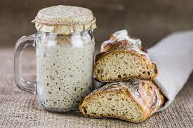
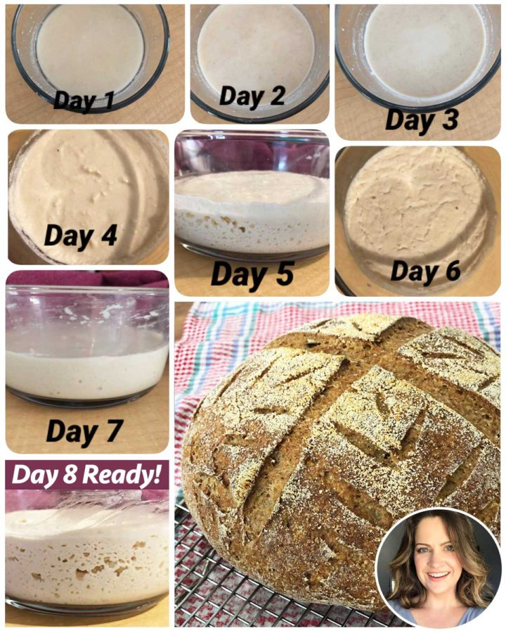

Sourdough Starter Recipe

Description
Simple step-by-step walkthrough on how to make your own sordough strater.
Once you make it, you can use it as long as you feed it regularily.
More on that will come in future posts.
Ingredients:
- Wheat flower (50 gr.)
- Water (50 ml)
Steps:
- Mixing the ingredients:
- Take a medium size glass jar and wight it empty.
- Mix ingredients and stir thoroughly.
- Leave loosely covered on room temperature for 24h.
- Add 500 gr. of White bread flour and mix together.
- Next day:
- Take your starter and throw away any excess amount above 50 gr. weight.
- Add 50 gr. of flour and 50gr. of water.
- Stir thoroughly and leave loosely covered for another 24 hours.
- Repeat the process for next 7 days.
- Your starter is ready for baking!
On day 8 you will have your starter ready for baking!
The intire process should look like this:
